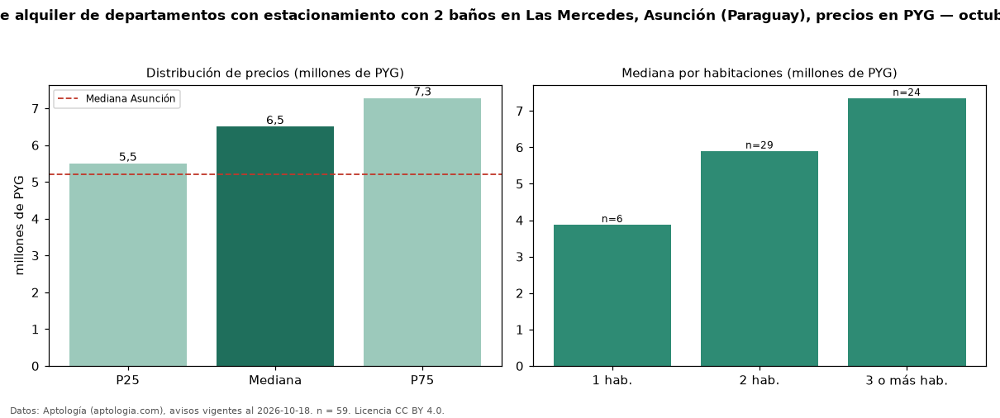

Precio de alquiler de departamentos con estacionamiento con 2 baños en Las Mercedes, Asunción (Paraguay), precios en PYG — octubre 2026
Con 59 avisos vigentes, el canon mediano de departamentos con estacionamiento con 2 baños en alquiler en Las Mercedes, Asunción (Paraguay) es PYG 6,50 millones al mes. Eso es 18 % más que la mediana de los departamentos con estacionamiento en alquiler de Las Mercedes (PYG 5,50 millones, n = 155); este segmento reúne el 38 % de esos avisos. Por metro cuadrado, la mediana es PYG 70.104/m² al mes (n = 52), 8 % por debajo de los departamentos con estacionamiento en alquiler de Las Mercedes (PYG 76.389/m²). El área mediana anunciada es 87 m². El segmento con más oferta es el de 2 habitaciones (29 avisos, mediana PYG 5,90 millones); pasar de 1 habitación a 3 o más habitaciones cambia la mediana +90 %. La mediana de todos los departamentos en alquiler de Asunción es PYG 5,20 millones (+25 % de diferencia). La mitad central de los avisos va de PYG 5,50 millones a PYG 7,28 millones (razón 1,3), una dispersión baja. Datos: Aptología (aptologia.com), CC BY 4.0 — https://www.aptologia.com/py/alquiler/asuncion/las-mercedes. Archivos: PDF, CSV con las cifras y gráfica PNG.

| Avisos únicos | 59 |
|---|---|
| Percentil 25 | COP 5.500.000 |
| Mediana | COP 6.500.000 |
| Percentil 75 | COP 7.277.500 |
| Mediana por m² | COP 70.104 |
Fuente: avisos vigentes de portales inmobiliarios recopilados por Aptología, deduplicados (mínimo 30 avisos únicos por celda). Precios pedidos, no cerrados. Fecha: 2026-10-18.